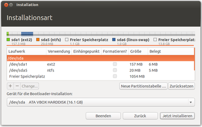

Manuelle Partitionierung
Dieser Artikel wurde für die folgenden Ubuntu-Versionen getestet:
Dieser Artikel ist größtenteils für alle Ubuntu-Versionen gültig.
Zum Verständnis dieses Artikels sind folgende Seiten hilfreich:
Dieser Artikel beschreibt die manuelle Einteilung (Partitionierung) der Festplatte, die man während der Ubuntu Installation in Festplattenspeicher zuweisen vornehmen kann. Die manuelle Partitionierung erlaubt die vollständige Kontrolle über die Einteilung der Festplatte(n).
Der Artikel soll ebenso dazu dienen, das Verfahren im Fall a) aus Dualboot Partitionierung zu veranschaulichen.
Wie die Einteilung von Festplatten (die Partitionierung) erfolgt, kann man nicht abschließend für jeden Einzelfall festlegen. Dazu sind die Anforderungen und individuellen Bedürfnisse zu verschieden. Das hier vorgestellte Beispiel soll lediglich als Anhaltspunkt für eigene Gedanken dienen und die grundsätzliche Vorgehensweise zeigen.
Für das hier dargestellte Beispiel, wurde ein virtueller Rechner mit einem 15 GB-Festplatten-Image genutzt. Das Image war zuvor komplett unbenutzt. Für die Vorführung wurde zuvor eine NTFS-Partition angelegt, die dann verkleinert wird. Mit den durchgeführten Schritten, wurde Ubuntu 12.10 installiert.
Achtung!
Eine Änderung der Partitionierung stellt einen fundamentalen Eingriff in die Festplatte dar. Deshalb ist vor der Partitionierung unbedingt eine Datensicherung vorzunehmen. In der Regel gehen zwar keine Daten verloren, aber da es immer zu unvorhersehbaren Zwischenfällen kommen kann (Stromausfall, Absturz des Rechners...) ist man mit einer Datensicherung auf der sicheren Seite.
Vorarbeiten unter Windows¶
Die Datenträgerbereinigung
 durchführen.
durchführen.Eine Datenträgerüberprüfung
startenEine Defragmentierung
durchführen.
Vorüberlegungen¶
Bevor man sich ans Partitionieren macht, sollte man sich über folgende Dinge im Klaren sein:
Welcher Typ von Partitionstabelle kommt zum Einsatz, MBR mit integrierter Partitionstabelle oder eine GPT?
Welche Partitionen sind in welcher Größe vorhanden?
Wie viele Partitionen benötige ich zusätzlich?
Wie groß sollen die zusätzlichen Partitionen werden?
Die in diesem Beispiel verwendeten Größen und Partitionen sind keine verbindlichen Werte. Die Bemerkungen in folgender Tabelle geben Hinweise auf eigene Größenanpassungen:
Hinweis:
Möchte man spezielle Programme benutzen oder soll/muss die Partitionierung auf lange Sicht ohne nachträgliche Änderungen auskommen, kann es sinnvoll sein, die Frage im Forum zu diskutieren, um die spezifischen Aspekte ausreichend zu beleuchten.
| Zusätzliche Partition für | Bezeichnung Einhängepunkt | Größe im Beispiel | Bemerkung |
| Bootpartition | /boot | 200 MB | Die Einrichtung einer Partition für /boot ist nur empfohlen, wenn besondere Gründe vorliegen. Sie ist zwingend notwendig, wenn man ein voll verschlüsseltes System oder für die Root-Partition ein Dateisystem nutzt, welches nicht von GRUB 2 unterstützt wird. Auf der Bootpartition werden für jeden installierten Kernel eigene Imagedateien abgelegt. Die Partition sollte nicht zu klein gewählt werden, damit mehrere Kernelversionen gleichzeitig vorhanden sein können (ca. 65 MB pro Kernel). Nicht mehr benötigte Kernel sollten regelmäßig deinstalliert werden. Wer dazu keine Lust hat, sollte deutlich mehr Platz vorsehen (500 MB - 2 GB), damit für Kernelaktualisierungen immer ausreichend Speicherplatz vorhanden ist. |
| Betriebssystem Linux | / | 10 GB | 10 - 15 GB sind als optimal zu betrachten |
| Persönliche Einstellungen und Daten | /home | 3.7 GB | Sollte reichlich bemessen sein, benötigt den meisten Speicherplatz |
| Auslagerungspartition | swap | 1 GiB | Faustregel: Größe des RAM + 20-30%. In diesem Beispiel wird der swap-Speicher selten benötigt, da kein Suspend to disk benutzt wird und der verfügbare RAM für den normalen Betrieb völlig ausreichend ist. Ist das RAM oft knapp und die Festplatte gross, sollte man 4-8GiB Swap spendieren. Hinweis: RAM-Grössen sind "GiB", auch wenn es als "GB" bezeichnet wird. 4GB RAM sind also 4 GiB RAM und das sind 4096 MiB. Falls man in GParted nur "4000" eingibt, kann es knapp werden. |
Hinweis:
Beim Einsatz einer GPT und BIOS , also ohne (U)EFI wird eine weitere Partition für GRUB 2 benötigt, die nicht ins System eingehangen wird. In diese Partition wird das core.img installiert.
| Zusätzliche Partition für | Bezeichnung Einhängepunkt | Größe im Beispiel | Bemerkung |
| BIOS Boot-Partition | - | 34-100 KiB | Partitionsnummer: 1 , Kennung: ef02, nicht formatiert (Reservierter BIOS Boot-Bereich) |
Beim Einsatz einer GPT mit (U)EFI wird eine EFI System-Partition (ESP) benötigt, die ins System mit eingebunden werden muss. Bei einem vorhandenen EFI-Windows ist diese Partition bereits eingerichtet und wird von GRUB 2 mit genutzt.
| Zusätzliche Partition für | Bezeichnung Einhängepunkt | Größe im Beispiel | Bemerkung |
| EFI System | /boot/efi | 100 - 200 MByte | empfohlene Partitionsnummer: 1, Kennung: ef00, FAT 32, boot-Flag setzen |
Manuelle Partitionierung¶
Im Folgenden werden zwei unterschiedliche Programme gezeigt: Links die Verwendung des Programms GParted unter GNOME, welches auch eine nachträgliche oder vorhergehende Partitionierung ermöglicht. Rechts wird das Programm des Ubuntu-Installers gezeigt. Die Reihenfolge der Schritte ist zwar identisch, sie unterscheiden sich aber in Aussehen und Ausführung. Statt GParted kann auch das QT-Programm Partitionmanager für eine vorhergehende Partitionierung verwendet werden. GParted kann nur gestartet werden, wenn man zu Beginn der Installation "Ubuntu testen" auswählt und dann in der Dash nach "GParted Partition Editor" auswählt. Dieser ist im Startmedium noch nicht lokalisiert, weshalb im Folgenden auch die englischen Begriffe in Klammern genannt werden.
| Der Vorgang des Partitionierens | |
| Mit GParted | Mit dem Installationsprogramm |
Hinweis:Sollte man sich einmal vertan haben, oder während der Partitionierung eine bereits geplante Partition ändern wollen, so muss man entweder über "Bearbeiten (Edit) -> Alle Operationen löschen (Clear All Operations)" von vorne beginnen oder über "Bearbeiten (Edit) -> Letzte Operation rückgängig machen (Undo Last Operation)" die letzte geplante Änderung löschen. | Hinweis:Sollte man sich einmal vertan haben oder während der Partitionierung eine bereits geplante Partition ändern wollen, so muss man den Button "Zurücksetzen" betätigen und von vorne beginnen. |
|  | |
| Die bisherige Einteilung der Festplatte. Man markiert die Partition, die verkleinert werden soll, klickt dann auf "Größe ändern/verschieben (Resize/Move)". Ist die Festplatte leer, überspringt man diesen und den folgenden Schritt. | Die bisherige Einteilung der Festplatte. Man markiert die Partition, die verkleinert werden soll, und klickt dann auf "Partition bearbeiten (Change...)". Ist die Festplatte leer, überspringt man diesen und den folgenden Schritt. |
Eine Partition verkleinern¶
| Mit GParted | Mit dem Installationsprogramm |
| Nun kann man entweder die Größe mit Hilfe des Schiebereglers einstellen oder man gibt im Feld "Neue Größe (New size)" die gewünschte Größe an (1GiB = 1024MiB). Anschließend einmal
Tab ⇆ drücken, damit die anderen Felder automatisch ausgefüllt werden. Nach Klick auf "Größe ändern/verschieben (Resize/Move)" kann man die erweiterte Partition anlegen: | Im nun geöffneten Fenster gibt man die neue Größe der Partition an. Die folgenden Felder dienen dazu, diese Partition in der Datei fstab einzutragen, um nach der Installation einen direkten Zugriff zu ermöglichen.Hinweis:Die Schritte für das Einhängen der Partition(en) sind auch nötig, wenn man die Festplatte vorher mit einem anderen Partitionierungsprogramm eingeteilt hat oder Ubuntu neu installieren will.
|
Eine Partition verschieben¶
| Mit GParted |
Hinweis:An dieser Stelle könnte die Partition verschoben werden. Da aber das Installationsprogramm keine Verschiebungen durchführen kann, wird in diesem Beispiel darauf verzichtet. Hier dennoch ein paar Hinweise dazu:
|
Hinweis:
Die folgenden zwei Schritte sind nur notwendig, falls es sich um eine leere Festplatte handelt! Durch das schreiben einer neuen Partitionstabelle, gehen alle bisher vorhandenen Daten verloren!
Neue Partitionstabelle erstellen¶
| Mit GParted | Mit dem Installationsprogramm |
| Ist die Festplatte noch komplett leer, wird eine frische Partitionstabelle erstellt. Hierfür geht man auf "Laufwerk (Device) -> Partitionstabelle erstellen... (Create Partition Table...)". Achtung: Diese Aktion wird sofort ausgeführt und führt zu komplettem Datenverlust auf der Festplatte! | Ist die Festplatte noch komplett leer, wird eine neue Partitionstabelle erstellt. Hierfür klickt man einfach auf "Neue Partitionstabelle ..." |
Primäre Partition /boot erstellen¶
| Mit GParted | Mit dem Installationsprogramm |
Auf einer leeren Festplatte wird zu Beginn eine Boot-Partition erstellt: Nach dem Markieren des "nicht zugeteilten (unallocated)" Speicherbereichs und Klick auf "Neu (New)", müssen folgende Eintragungen gemacht werden:
| Ist die Festplatte noch komplett leer, wird zu Beginn eine boot-Partition erstellt: Man markiert den freien Speicher und klickt auf "+". Im Fenster werden nun die Einstellungen wie im Bild zu sehen vorgenommen. |
Eine erweiterte Partition anlegen¶
| Mit GParted | Mit dem Installationsprogramm |
| Dieser Schritt wird im Installationsprogramm automatisch bei den weiteren Einstellungen ausgeführt. | |
| In der Anzeige ist nun ein "nicht zugeteilter (unallocated)" Bereich zu erkennen. Dieser wird nun markiert und man betätigt die Schaltfläche "Neu (New)". In diesem Fenster stellt man nun bei "Erstellen als (Create as)" die Option "Erweiterte Partition (Extended Partition)" ein. Alle anderen Felder können übernommen werden. Anschließend klickt man auf "Hinzufügen (Add)". In dieser "erweiterten Partition" erstellen wir nun nacheinander die restlichen Partitionen: |
Logische Partition /swap erstellen¶
| Mit GParted | Mit dem Installationsprogramm |
Als erstes wird die swap-Partition erstellt: Nach dem Markieren der erweiterten Partition und Klick auf "Neu (New)" müssen folgende Eintragungen gemacht werden:
| Man markiert den freien Speicher und klickt auf "+". Im Fenster werden nun die Einstellungen wie im Bild zu sehen vorgenommen. |
Logische Partition root erstellen¶
| Mit GParted | Mit dem Installationsprogramm |
| Die Partition für das Linuxsystem wird in gleicher Weise angelegt wie die swap-Partition: "Nicht zugeteilt (unallocated)" markieren, Schalter "Neu (New)" betätigen, Größe angeben, "Logische Partition (Logical Partition)" einstellen. Als Dateisystem stellt man allerdings nun "ext4" ein. Bezeichnung (Label) ist optional. "Hinzufügen (Add)". | Die root-Partition wird genauso wie die swap-Partition angelegt. Zwei Dinge unterscheiden sich jedoch:
|
Logische Partition /home erstellen¶
| Mit GParted | Mit dem Installationsprogramm |
| Die /home-Partition wird entsprechend angelegt | Die /home-Partition wird entsprechend angelegt. Unterschied:
|
Fertig¶
| Mit GParted | Mit dem Installationsprogramm |
| So sieht die fertige Partitionierung mit GParted aus. Achtung: Sämtliche Änderungen werden erst durchgeführt, wenn man "Bearbeiten (Edit) -> Alle Operationen ausführen (Apply all operations)" auswählt. Je nach Umfang der Änderungen kann es eine Weile dauern bis GParted alle Operationen durchgeführt hat. Ein längeres Stillstehen bei 0% ist durchaus normal. | So sieht die fertige Partitionierung mit dem Installationsprogramm aus. Achtung: Bis auf das Verkleinern der Partition werden die Änderungen erst am Ende der weiteren Installationsschritte vorgenommen. |
Nach der Partitionierung¶
Bei einer Neuinstallation geht es bei Schritt 5 weiter.
Wurde mit GParted eine Partitionierung zur Vorbereitung der Installation vorgenommen, so muss während der Installation in Schritt 4 ebenfalls "Manuell" ausgewählt werden. So kann man für jede Partition die entsprechenden Einstellungen für "Benutzen als" und "Einhängepunkt" vornehmen (siehe Beispiel Eine Partition verkleinern).
Wenn was schief gelaufen ist¶
Notfall
 Was tun in Notfällen?
Was tun in Notfällen? Festplatten Problembehebung - bei Festplattenproblemen
Testdisk
- Partitionen wiederherstellen und rettenVista Partition verschoben
 - Vista bootet nach Verschieben der Partition nicht mehr (englisch, aber sehr anschaulich bebildert). Funktioniert genauso bei Windows 7 - in diesem Falle analog mit der Win7-DVD booten.
- Vista bootet nach Verschieben der Partition nicht mehr (englisch, aber sehr anschaulich bebildert). Funktioniert genauso bei Windows 7 - in diesem Falle analog mit der Win7-DVD booten.Forenthread zum Thema MBR/PBR manipulieren
- Erstellt mit Inyoka
-
 2004 – 2017 ubuntuusers.de • Einige Rechte vorbehalten
2004 – 2017 ubuntuusers.de • Einige Rechte vorbehalten
Lizenz • Kontakt • Datenschutz • Impressum • Serverstatus -
Serverhousing gespendet von